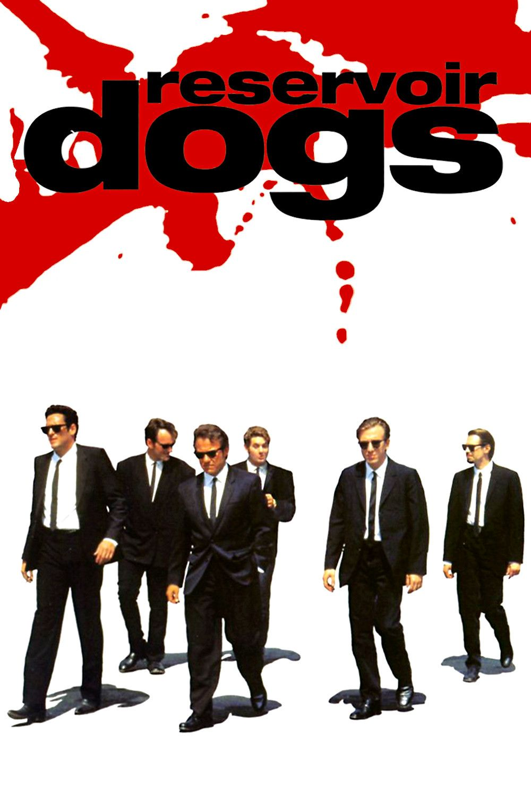
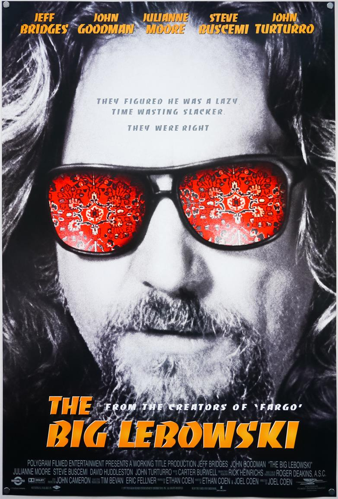
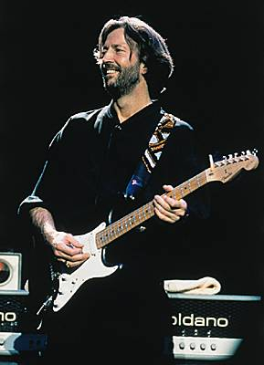
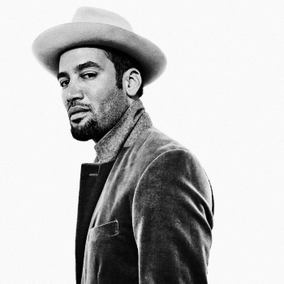
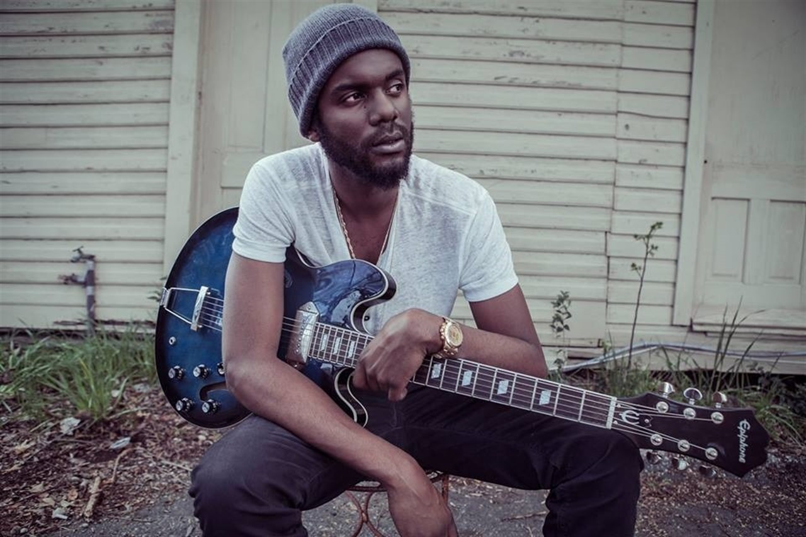

Thierry DE AZEVEDO
Futur Developpeur Web Full Stack
Après 18 ans d’expérience dans les RH, je veux, maintenant, utiliser mes nouvelles compétences de « Développeur Full Stack » afin de créer des app web ayant vocation à améliorer le business des acteurs RH
Voyez mes new skillsMES FILMS FAVORIS
|  |
Reservoir DogsAprès un hold-up manqué, des cambrioleurs de haut vol font leurs comptes dans une confrontation violente, pour découvrir lequel d'entre eux les a trahis. |

|
Pulp FictionL'odyssée sanglante et burlesque de petits malfrats dans la jungle de Hollywood à travers trois histoires qui s'entremêlent. |
|  |
The Big LebowskiJeff Lebowski, prénommé le Duc, est un paresseux qui passe son temps à boire des coups avec son copain Walter et à jouer au bowling. Un jour deux malfrats le passent à tabac.C'est une méprise, le Duc part alors en quête d'un dédommagement auprès de son richissime homonyme... |
MES MUSICIENS PREFERES
|  |
Eric CLAPTONEric Clapton, né le 30 mars 1945 à Ripley, près de Guildford, est un guitariste, chanteur et compositeur de blues et de rock britannique. |
|  |
Ben HARPERBen Harper (né le 28 octobre 1969 à Claremont, Californie) est un guitariste, auteur, compositeur et chanteur américain, accompagné de différents groupes (The Innocent Criminals, The Blind Boys of Alabama, Relentless Seven) avec lesquels il pratique une musique mêlant les influences folk, blues, gospel, rock, funk et reggae. |
|  |
Gary CLARK JrJGary Lee Clark, Jr.1 est un chanteur et guitariste établi à Austin, au Texas. Sa musique, selon ses propres dires, puise ses influences dans le blues, le jazz, la country ou encore le hip-hop2. La marque de fabrique de Gary Clark Jr. tient en sa voix lisse et ses riffs de guitare saturés. |